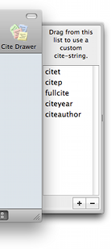

The Custom Citation Strings Drawer The Custom Citation Strings Drawer
The Custom Citation Strings Drawer The Custom Citation Strings DrawerChoosing "Show/Hide Custom Citation Strings" from the Window menu
(⌃⌘C
) toggles a drawer that allows you to drag and drop
citations into a TeX document using custom-defined citation strings,
such as fullcite, citet, and citep.

Dragging a custom citation string from the drawer will put a LaTeX citation command for the currently selected items on the pasteboard, using the corresponding custom citation command rather than the default one. See Citation for setting the default citation command and the command style to use.
You can edit the list of custom citation strings from the drawer. To add a custom citation string, choose the "+" button. You can change the name of a citation string by double-clicking on the item. To remove a custom citation string, select the corresponding item in the table, and choose the "-" button.